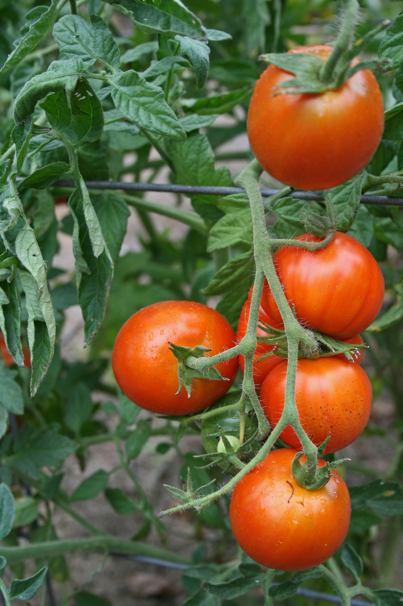
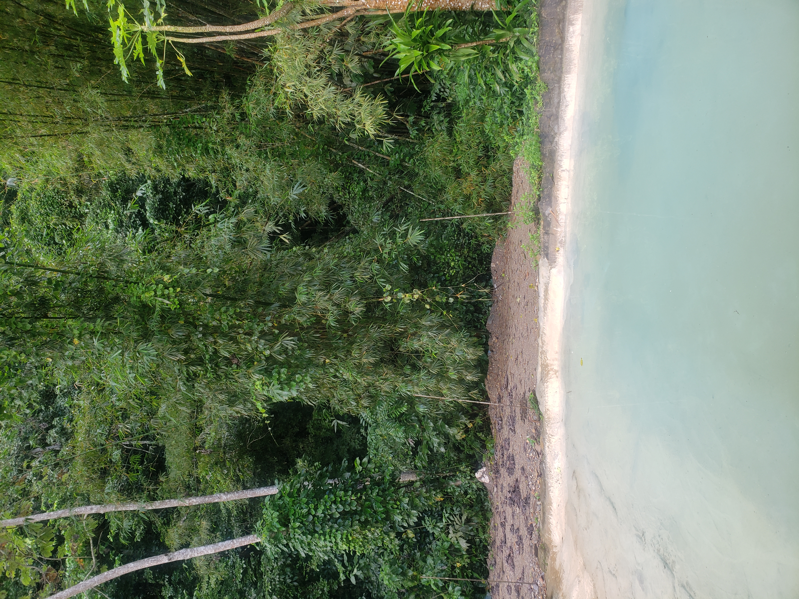
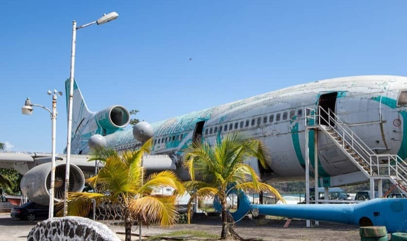
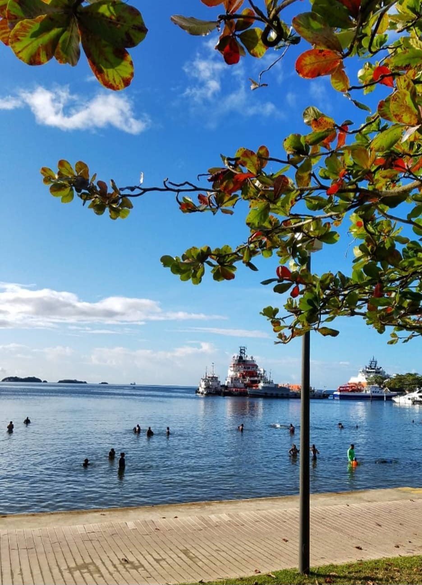
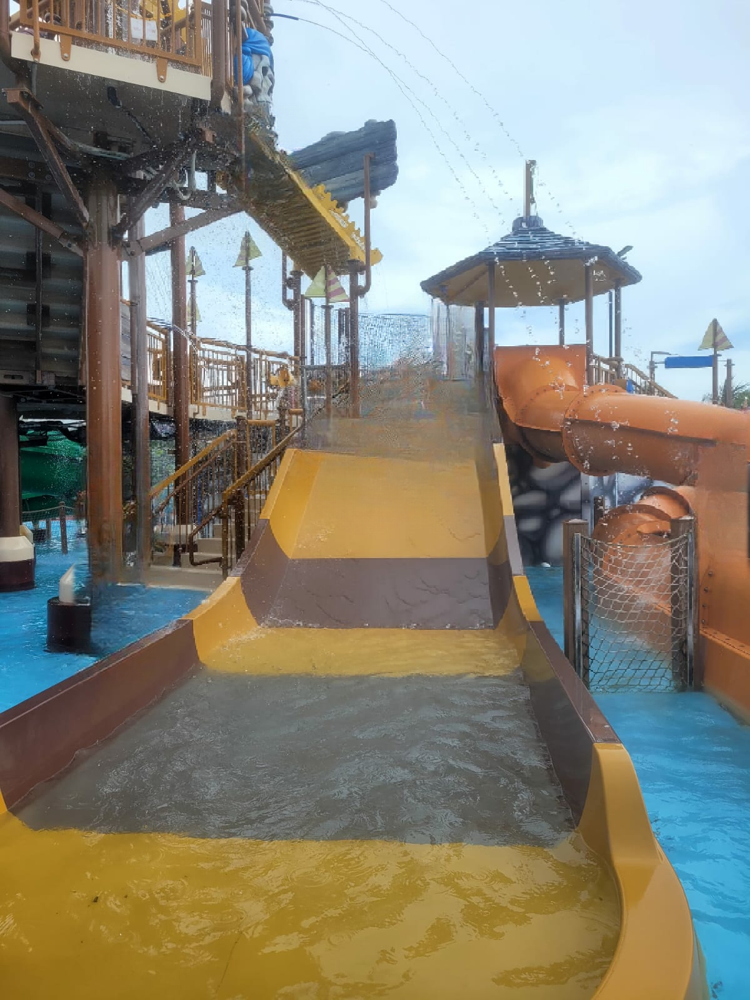
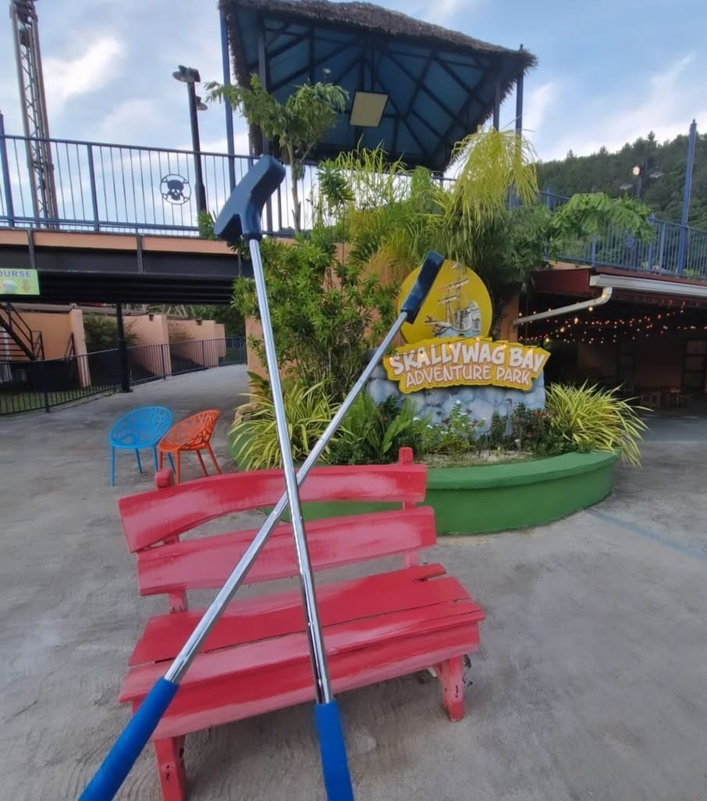
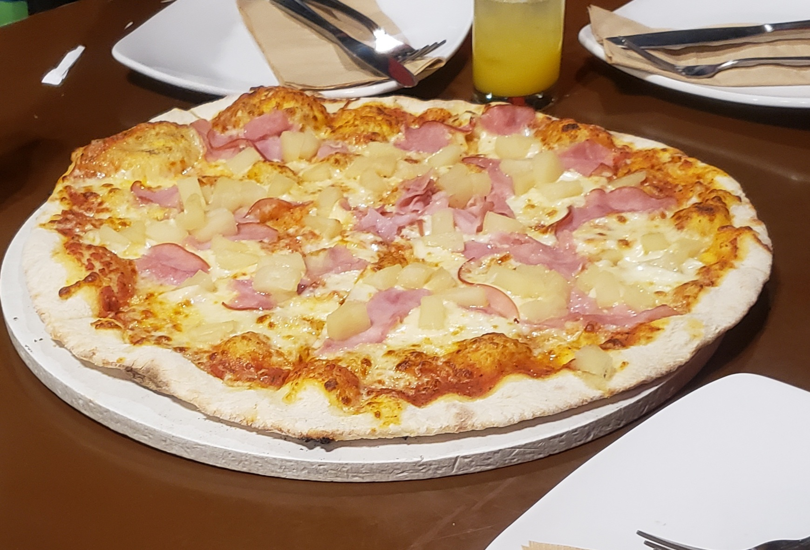
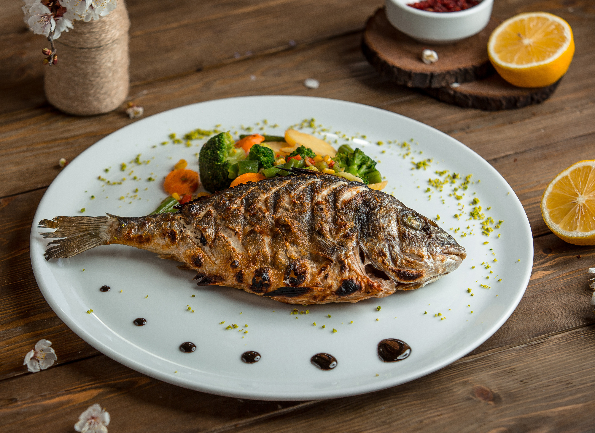
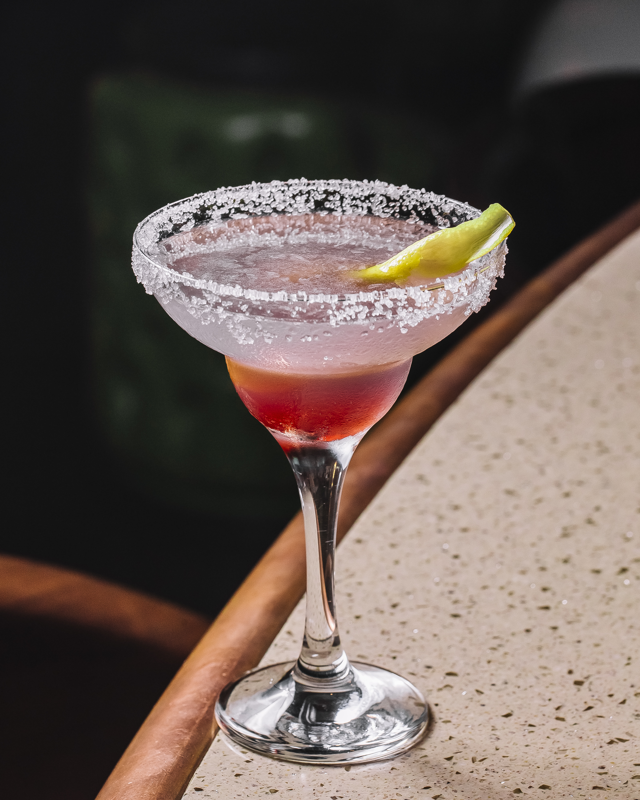
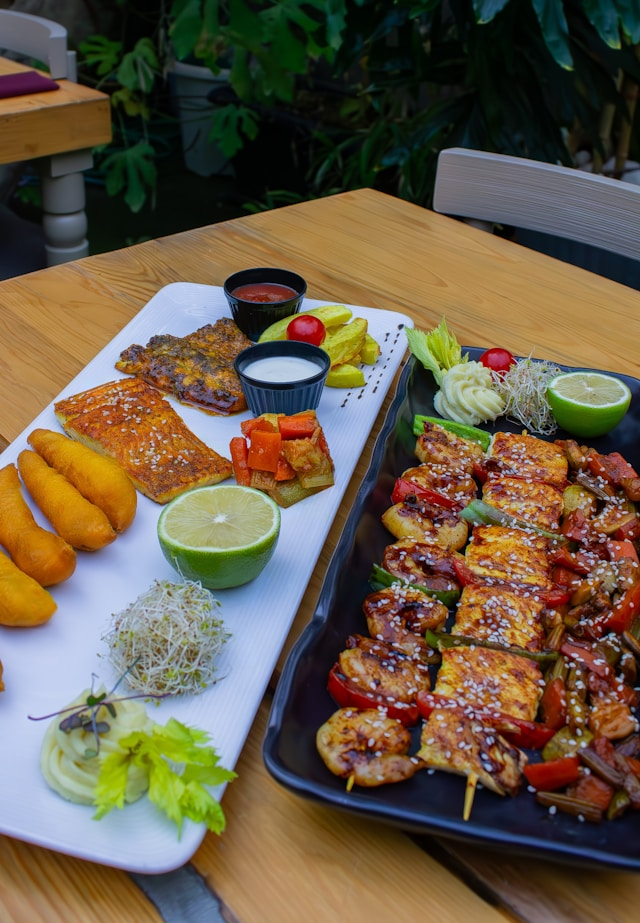

RoamChaguaramas
Places to Visit
Map Included at the End
Nature Spots
Bamboo Cathedral
 It's a paved trail with arching bamboo stalks, and a home to monkeys and birds.
It's a paved trail with arching bamboo stalks, and a home to monkeys and birds.
Macqueripe Bay
 A small beach perfect for swimming, snorkeling, and scuba diving. You can also find a seven course zipline here with the views of the sea.
A small beach perfect for swimming, snorkeling, and scuba diving. You can also find a seven course zipline here with the views of the sea.
U-Pick Farm

At this farm, you can pick ypur own fresh fruits and vegetables and have breakfast or lunch at their cafe.
The Arboretum

It's a botanical garden focused on preserving plants and trees. You can also have picnics here.
Cultural Spots
Chaguaramas Military Museum

This museum shows the battle recreation of the Caribbean soldiers in overseas warfare.
Chaguaramas Boardwalk

It's a 1400ft walkway with views of the sea and it includes a pond with pedal boats and gazebos.
Five Islands Water & Amusement Park

A family-friendly park that has giant slides, arcade, go-karts and much more.
Skallywag Bay Adventure Park

It's a theme park offering daily fun activities.
Dining Spots
Caffe Del Mare

A coffee shop with lots of different options and a great marina view.
Sails Restaurant & Pub

It's one of the waterfronts restaurants here that serves mainly seafood and a variety of other dishes.
WheelHouse Pub

It's an affordable restaurant in a marina and they serve great cocktails.
The Lure Bar & Grill

It's a seafood restaurant that has outdoor seating.